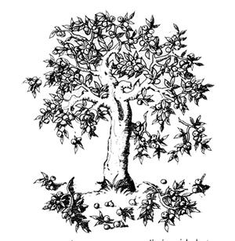
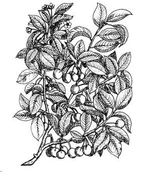
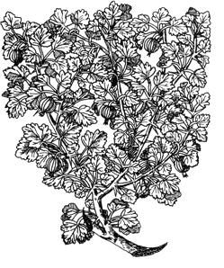

Ah, the vicissitudes of time. Two years ago, when there were NO currently relevant small-scale-farming introductory handbooks available, many of us welcomed the publication of Richard Langer's Grow It! with open arms. Now that we're all older and more experienced, however, some folks find it increasingly easy to criticize that breakthrough beginner's guide (see the Feedback sections of MOTHER NOS. 23, 24 and 25). Which brings us to another breakthrough book that is just as important (probably more so) now as Grow It!.
A man who refuses apple dumpling cannot have a pure mind.
It is one of the many disadvantages of the landlord and tenant system that there are so few fruit trees in English cottage gardens. No landlord is going to plant trees for his tenants, and no tenant is going to plant trees for his landlord. "No man," wrote that great prophet of the soil, Philip Oyler, "unless he is a saint, can be expected to give the land the same care (the care it needs) if he is a tenant or an employee as he would as an owner." That is so obvious that one would not think it necessary for anybody to say it, but it is necessary. He also wrote: "We should accept it as fundamental that each individual has a right to a plot of the earth on which he was born to as much as he and his family can farm well."
Assuming that our self-supporter does own the land he is living on: his rightful share of the earth's surface shall we take it?, he will obviously wish to plant fruit trees. If there are any old neglected fruit trees on his land he will be wise to leave them in a year or two and see if they can be got to fruit well by heavy manuring, pruning (just cut a lot of the branches out of it), and winter washing. If the old tree still doesn't bear try root pruning, that is digging down and cutting a lot of the roots with a sharp spade. Bark-ringing is another method that has the same effect: remove a strip of bark right round the tree a quarter of an inch wide. More may kill the tree, but a quarter of an inch is not too much for the bark to jump again in a year or two so that the tree can go on growing. Bark-ringing and root pruning give the tree a nasty shock, which may be just what it wants to start it fruiting again. You can't do this with stone fruit by the way, only apples and pears.
Meanwhile, whether you have old trees or not, you should be planting new ones. Do this any time when the sap is down, i.e., in the winter, although November is supposed to be a pretty good time to plant. Go to a neighboring fruit grower (if there is one) or a local nurseryman, and get from him the best varieties to plant on your soil. Get early varieties as well as late, so as to spread the eating season (late store better than earlies: the latter should be eaten at once) and also get various kinds of trees, i.e., some cordons or espaliers, some half-standards and some standards. The reason for this is that your cordons or espaliers, being small and kept small, will fruit several years before your bigger trees, and thus will begin to give you fruit fairly soon. The half standards will come into fruiting next, possibly when your family or community is increasing and you need more fruit, and the standards will come last, but will go on and keep you in fruit for a lifetime. They have the enormous advantage that animals can graze beneath them. Three year old trees are best to buy, although you might try to put one or two older trees in, with enormous care, hoping that they won't die. I have seen ten year old apple trees planted, and they survived, but it was done by an expert.
As for varieties: this book is not long enough even to discuss this subject. Either gen yourself up on this, or go to a local expert. Make sure he knows about stocks too. It is most important that your chosen variety is grafted on to the right stock, i.e., a dwarfing stock for small trees (such as Mailing No. 9 with apples), a non dwarfing stock for large ones. If, your "expert" doesn't know about stocks, find one that does.
Keep the roots of your little trees moist when you bring them from the nursery. Dig large holes for each tree. Plant in good, well drained, deep soil. Water logged soil will simply kill them. Chuck some builder's rubble in the bottom of your hole if you have any (it helps drainage and provides lime in years to come), dump in a barrow load of muck, shove in some soil, and then spread the roots of your tree nice and evenly on the soil, so that the roots stay in their natural shape and yet are all well in contact with the soil. Adjust it so that the tree will be an inch or two deeper than it was before. Put more good soil on the roots, tamp it down well; have sympathy with the tree that you are planting, imagine what you would feel like if you were a tree and being planted, how you would like your roots disposed of. It is that imaginative sympathy that some people have got and others haven't that is called "green fingers". Firm the soil well, but don't break the roots in doing so. Put a little lime with the soil and when you have filled the hole put a pound of lime on the ground around the tree. Mulch it well too with muck, old straw, cut nettles or bracken, or anything. The mulch keeps the soil from drying out, suppresses weeds and creates humus. All fruit trees, so far as I know, like lime. Stone fruit must have it (stone fruit are cherries, plums, peaches, etc.).
As for spacing, remember that the trees will grow! It is a very good plan to plant with the idea of using the land for something else besides big fruit trees. For example, plant wide apart rows, say 24 feet apart, with standards and 20 feet apart in the rows, and for years you will be able to grow two rows of soft fruit between the rows of big trees. When the standards spread somewhat only grow one row of soft fruit. When the standards reach maturity don't grow any. And here we might as well point out that the beauty of growing standard trees (the biggest), in spite of what most books on fruit growing tell us (they all say grow little trees for speed and space saving), is that when they are fully grown you can graze large animals underneath them. The trees are high enough for the branches to be out of the reach of grazing animals (who would otherwise rip them to pieces animals love fruit trees). There is no more productive use of land possible than a mature orchard of standard fruit trees with grass and clover underneath and animals grazing on it. All stock go well under fruit trees, and do well, and do the trees good with their manure, and their keeping of the grass short. Pigs (which have to be ringed so that they don't damage the roots) will eat the windfalls. But rotate your stock under the trees, as you rotate stock on all land: never keep the same species of animal on the same land for too long. Never make hay in orchards-it starves the trees.
Until your trees are, say, five years old, keep the ground just around their trunks bare. Either by mulching, or by mattocking or hoeing, keep the turf away from their trunks. And it doesn't matter how much muck you dump round those trees every year. People will tell you that heavily manured trees sometimes grow too fast and will not crop. I would say let 'em grow and good luck to them they will crop one day, and be the better trees for it. Try pruning them harder, particularly in summer, and, when they get really big, if they still don't crop root prune them.
Pruning is all a great mystery, and everybody has his own idea about it. I know a man who says never prune at all, just leave the trees to nature and they will give you fruit. We have always pruned though and it seems to work.
Summer pruning is necessary for cordons and espaliers and trees being trained up walls. It is also good sometimes for a young tree which is growing too fast but shy about coming into bearing. Winter pruning is much more general. Immediately you have planted a tree, prune it to the sort of shape that you are going to want. That is cut the branches out of the centre of the tree, to some extent, so as to keep the tree open in the middle and let the light and air in. If two shoots are too near to each other cut one out. Aim to have four or five evenly spaced branches, and these branches, that you have left, must be shortened. Cut about two-thirds of the last year's growth off the branches that you are left with. The branches will shoot again from the last bud that you have left before your cut-so cut about half an inch from a bud that you wish to grow. This will probably be on the under side of the branch, for you wish to encourage the tree to assume an open - centred cup-shape, with spreading branches. It is important to prune hard this first year, because the branches of the tree should balance the roots, and by transplanting you have given the roots a pretty good shock, so you must give the branches one. Two wrongs make a right, in fact.
In the second year you must distinguish between leaders and laterals. The leader on each branch is the shoot which comes from the end bud and makes an extension of the branch. Laterals grow from the branch behind it. You should shorten the leaders by about half their length, cutting again to a bud from which you want the new leader to grow. Laterals you should either cut off completely, if you don't want them, or more often cut them off to about three to five inches. Three inches for a weak and flimsy lateral, five for a stout one. These truncated laterals will then, in time, form fruiting spurs. For the next couple of years do much the same thing, but take less off the leaders until you are just tipping them. By now you should have a nicely-shaped tree, not overcrowded anywhere, nice and open in the middle, with plenty of well spaced fruiting spurs.
After this, prune much more lightly. If they make very slow growth prune harder-cut away half the leaders. If they make too much growth don't prune. It has been said that they are like us: "to those that hath shall be given, and from those that hath not shall be taken away". That is, for fruit trees, how it should be if they are to thrive. I'm not so sure about ourselves.
Pears treat like apples. But they are a more delicate tree, and do best in sheltered positions, up against south facing walls and so on. They need better treatment.
Plums like all stone fruit suffer from silver leaf disease, which creeps into them by way of cuts. Except for the winter in which you plant them they should not be winter-pruned therefore, but pruned in May or June. They can then heal the cuts more rapidly and keep the disease out. Once they are shaped well leave them alone, the less pruning the better. Cherries and peaches the same.
Spraying should be kept to a minimum in the organic orchard (when one meets commercial growers who have to spray fifteen times a year one can only wonder why they don't find an easier way of making a living!). But some spraying is necessary. Winter washing, with stuff called Morteg, is worth it, or some other tar distillate. It kills the lichen and moss on the trunks of the trees, under which insect pests grow, and kills the eggs of aphids and other horribles. You must not winter wash after the end of January for plums and pears or February for apples, or the strong tar will kill the buds. Summer sprays are much more complicated affairs and we don't do them unless we absolutely have to (a bad caterpillar attack, for example, when we spray derris) and if you must use them you must get expert advice. But if you are only growing for your own delight, and not to make a fortune, I don't advise much spraying. Spraying kills pests it is true but it also kills the creatures that prey on pests. Once you start interfering with the balance of nature you may find yourself like a dog chasing its tail.
Don't forget the humble greengage. I can remember as a boy when most cottage gardens had their greengage trees at the bottom of them, heavily laden with fruit in the late summer, and what a marvellous flavour they were! And what fine pies and puddings were made from them. Under their shade the cottager kept tame rabbits in home made hutches, the hinges of the doors made from strips of leather, and the kind of cottager I liked best to associate with had ferrets too. Greengages need a Victoria plum tree somewhere near them to pollinate them.
Lawrence D. Hills, who knows more in the lobe of his left ear about fruit growing than I know in my whole carcase, says a three year-old bush Peregrine peach tree planted in September or October or February should have any fruit lets it grows in its first year. picked off, be allowed to rear a dozen peaches the second year, forty the third year, and enough to make you ill the fourth year-with new cider! You should thin the fruits until they are eight inches apart. The only peaches we have grown have suffered from leaf curl. This because we did not spray them with lime sulphur in late January and again perhaps in February. Alas-no peaches.
Cherries should be pruned, if at all, in mid-June, and paint the wounds against silver leaf. But cherry growing in England, where we have practically exterminated our hawks, is a battle against birds.
There is a sawmill owner in Shropshire who buys every piece of good enough land that he can lay his hands on, and plants it up with walnuts. He does this, he explains, because his ancestors planted walnut trees for him to fell now he wants to repay them by planting walnuts for his grandson. They will be ready to fell in 130 years' time. But meanwhile they will give an awful lot of walnuts and what in the world can be nicer than walnuts?
There is one soft fruit that every self-supporter should have, and that is blackcurrant. This is because blackcurrant has by far the biggest load of vitamin C, which is the vitamin that very many people are short of, in spite of the constantly reiterated statement that people eating an ordinary modern diet get enough vitamins. They get enough to stay alive and not get scurvy and that is all.
Plant the blackcurrants 4 feet 6 inches apart or five foot if you've got room. Prune so that the shoots come up from a stool at near ground level. Every year, in the winter, cut all the old, black wood out: the wood that has already fruited. But do not prune the new wood, that has not yet fruited, at all. For it is this that will bear the fruit next year. Plant plenty of blackcurrants: we have a dozen bushes but would like a dozen more. Manure very heavily every year with muck. Pull weeds out as they grow. One day, your blackcurrants may get big bud; enlarged buds looking like Brussels sprouts but the size of a big pea. Put these buds on the fire. One day they may get 'reversion' and the leaves will look like nettles. Grub the bushes out and carefully burn them. But before they get that you should have planted more. You can grow more from healthy cuttings; stick six inch long cuttings in the ground in a row in November when you prune the old bushes. Leave them to grow for three years before planting them out into your new blackcurrant bed.
Red and white currants look beautiful but won't really feed the multitudes. Prune them like apple trees, not like blackcurrants which are completely different. You can let grass grow between soft fruit if you keep it short.
Gooseberries you should prune also like apple trees but hard. Give them plenty of potash wood ash is fine.
Raspberries are very useful and well worth growing. Plant the stems that have grown up from the creeping roots of somebody else's raspberries; cut the stem about eight inches long with a bit of root attached about the same length. Plant in October in rich land not too deep, a foot apart in the rows and six foot between the rows. At each end of each row drive in a post and have two parallel wires between the tops of the posts and make the growing canes grow between the two wires. In the autumn cut out some of the old canes, right from the bottom, leaving not more than half a dozen good young canes per plant. You'll have to dig like mad every year alongside the rows to cut out the creepers which will cover your whole garden if you don't look out. Much like mad they're a greedy fruit. Our soft fruit garden was a piece of waste land which when we came here was practically devoid of soil: a little pocket of stones and gravel dumped here in the ice age. It is now deep black soil, and we get very heavy crops of both raspberries and blackcurrants, although the gooseberries, alas, aren't much cop.
Strawberries are a luxury and nothing more, but if you want them cadge good runners off your neighbors, or buy from a nursery, plant them in August in rich soil but no lime. The strawberry is a woodland plant and woodland soil is acid. Plenty of leaf mould is fine. Plant them shallow, with the roots spread wide. Weed them like the devil. You can't really hoe them because you would cut the roots. Mulch them well with bracken, straw or leaf mould. Spray sluggit or bait for slugs. The strawberry is a walking crop: it will not crop for many years on the same land, so establish a new bed every year, and every year (after you have got going that long) dig up a three year old bed. You can use your own runners for a while, but get in fresh blood every few years as your stock will lose virility.
In Suffolk we used to grow Moneymaker and Harbinger tomatoes out of doors, and of these Harbinger were better although in very good seasons Moneymaker had a bigger crop. Being idle we used to buy the plants from a nursery, plant them out in late May or even June on very good ground against a south-facing wall, give them sticks to be tied to, and pull off the little shoots that grow from the angle between the stem and the branches and also shoots which sprang up from the ground. When tomatoes begin to grow you can feed the plants, like old-fashioned gardeners used to do, with the delicious liquor from a barrel filled with water and muck. Tomatoes suffer from blight in exactly the same way as potatoes do (the two plants are very closely related) and if you fear blight spray with Bordeaux mixture or the proprietory Bulsol, and spray several times,. If blight hits them you've had it. Unlike potatoes the part you eat gets affected, the fruit will simply turn brown and decay. Don't grow tomatoes twice on the same bit of ground without a rest. They build up Lord knows what dreadful infections.
If you insist on growing your own plants from seed, these should be sown on a mixture of 1/3 sifted loam, 1/3 leaf mould and 1/3 sharp sand, in gentle heat, in March. Growers often soak this compost with boiling water a week before sowing to kill creepies. Sow 1/4 inch deep in rows of one inch apart. Thin out as soon as you can to 1/2 inch apart in the rows. Water moderately with tepid water do not over water. When they have made two leaves transplant to other boxes two inches apart. End of April transplant plants again this time to 4 inches apart. You will need more patience than I have got. Tomatoes don't like lime.
Consider the idea of three dimensional farming. In Mallorca I have seen large areas of very good land sparsely planted with food bearing trees with good grass underneath on which animals grazed. The trees were exploiting the subsoil-bringing up minerals and trace elements from down below where the grass roots could not get. The grass was feeding the animals which in turn were manuring the trees. Many of the trees were locust bean, producing a heavy crop of high-protein stock feed. If we could find a tree that produced a high protein food in the British climate we would be well on the way to self-sufficiency.
|
 |
 |
 |